java基础
因为java的底层是用C语言和汇编语言进行实现的。所以java程序编译后生成的并不是机器码，而是字节码，字节码是一种和任何具体机器环境及操作系统环境无关的中间代码，这段代码被java虚拟机（叫做jvm的程序）进行解释成对应平台的机器码，然后执行。所以，java有一个特点：“一次编写，到处运行”。
一次编写到处运行的好处
因为java语言的这种方式，所以有效地解决了大多数高级程序设计语言需要针对不同系统来编译产生不同机器代码的问题，即硬件环境和操作平台的异构问题，大大降低了程序开发、维护和管理的开销。
环境的搭建
下载jdk
下载地址：https://www.oracle.com/technetwork/java/javase/downloads/index-jsp-138363.html
点击下载按钮：
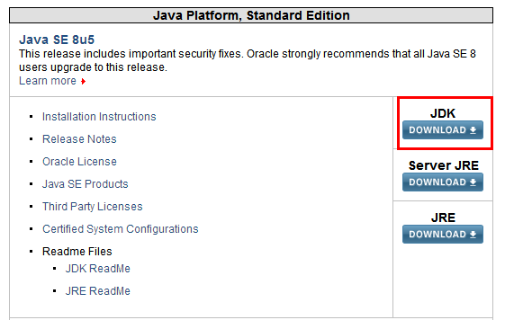
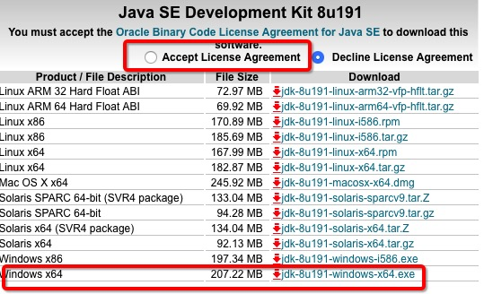
开始安装JDK：
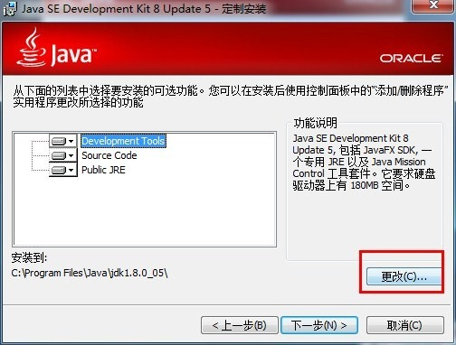
可以设置为你想安装的路径。
环境变量配置
1. 打开 环境变量窗口
右键 This PC(此电脑) -> Properties（属性） -> Advanced system settings（高级系统设置） -> Environment Variables（环境变量）...
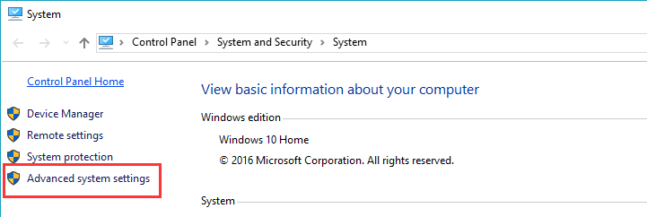
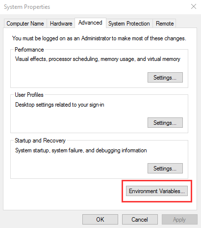
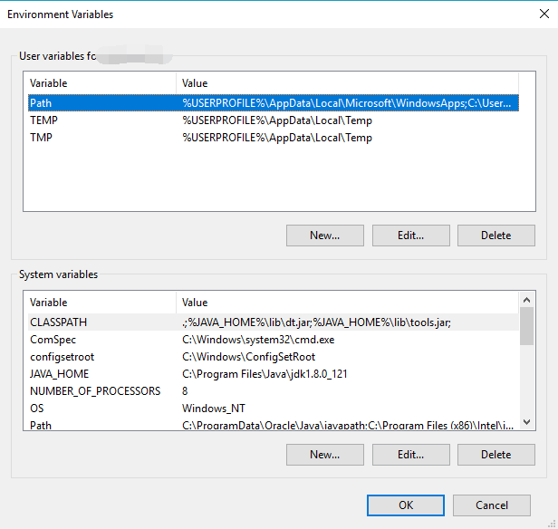
2. 新建JAVA_HOME 变量点击 New（新建）... 按钮
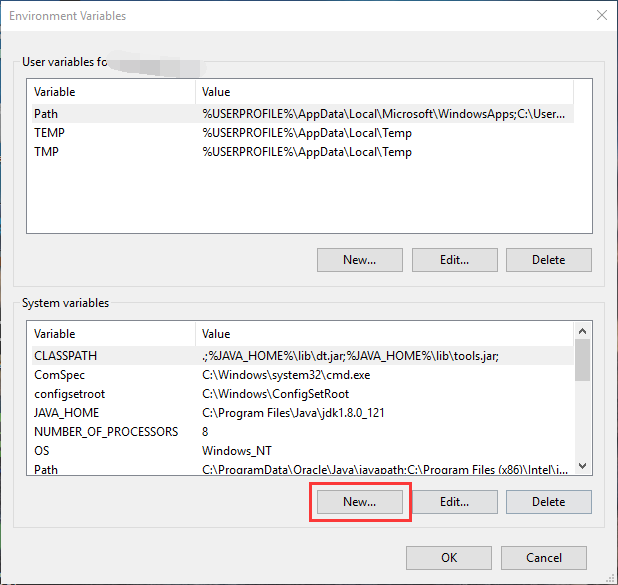
输入:
变量名：JAVA_HOME
变量值：电脑上JDK安装的绝对路径
输入完毕后点击 OK。

JDK 路径下必须能够看到如下的文件。
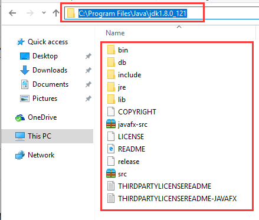
3. 新建/修改 CLASSPATH 变量
如果存在 CLASSPATH 变量，选中点击 Edit(编辑)。
如果没有，点击 New（新建）... 新建。
输入/在已有的变量值后面添加：
变量名：CLASSPATH
变量值：.;%JAVA_HOME%\lib\dt.jar;%JAVA_HOME%\lib\tools.jar;
点击 OK 保存。

4. 修改Path 变量
由于 win10 的不同，当选中 Path 变量的时候，系统会很方便的把所有不同路径都分开了，不会像 win7 或者 win8 那样连在一起。
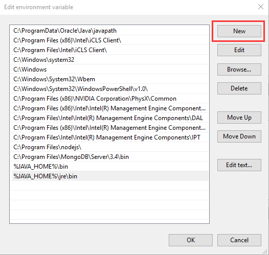
新建两条路径：
%JAVA_HOME%\bin
%JAVA_HOME%\jre\bin
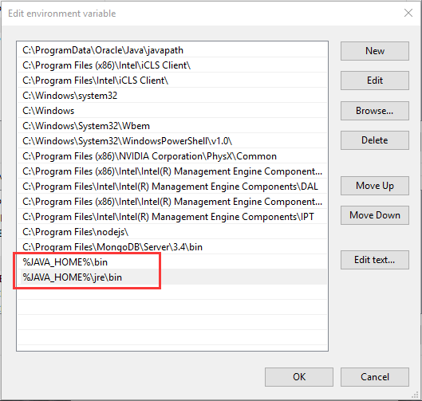
5. 检查 打开 cmd，输入 java，出现一连串的指令提示，说明配置成功了:
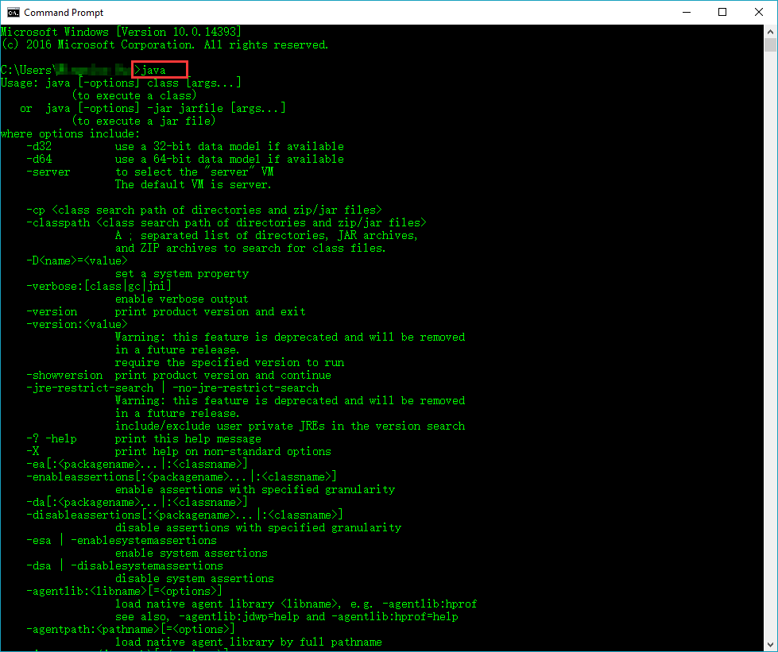
第一个java程序
jlsdjf